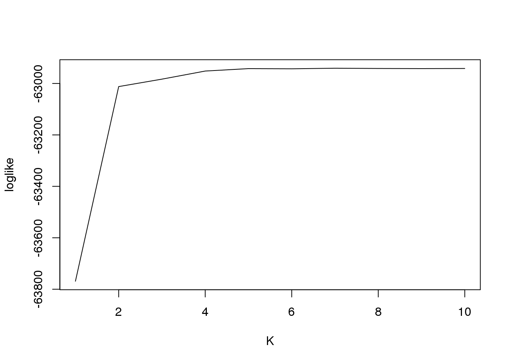
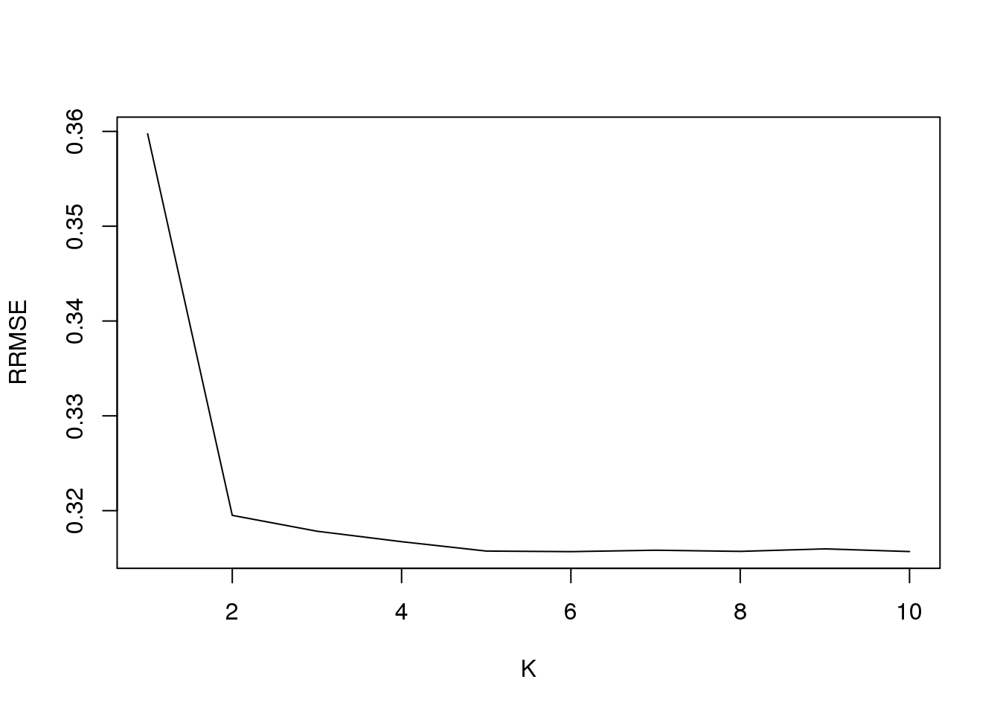
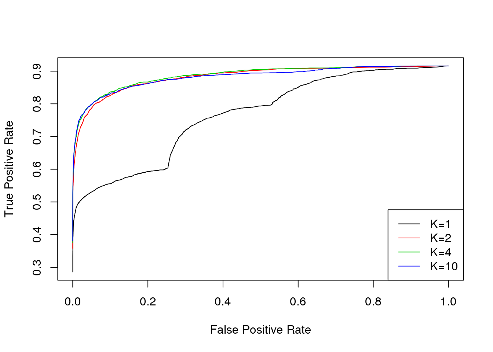

Last updated: 2018-01-30
Code version: b3c880a
We set unit number \(n = 10000\), and study number \(R = 4\). We set every observation to be the same standard error, \(s_{jr}=1\). That is \(\hat\beta_{jr}|\beta_{jr}\sim N(\beta_{jr};0,1)\). The 10000 units come from 4 patterns (\(K=4\)): 9000 units have zero effects in all four studies, that is \(\beta_{jr}=0\), for \(r = 1,2,3,4\); 400 units have effect \(\beta_{jr}\sim N(0,4^2)\) for \(r =1, 2\) and \(\beta_{jr}=0\) for \(r =3, 4\); 400 units have effect \(\beta_{jr}\sim N(0,4^2)\) for \(r =2, 3\) and \(\beta_{jr}=0\) for \(r = 1, 4\); 200 unitss have effect \(\beta_{jr}\sim N(0,4^2)\) for \(r =1,2,3,4\).
To fit the model, set \(K = 1:10\).
source('../code/function.R')
K = 4
D = 4
G = 50
sigma2 = c(16,16,16,16)
pi0 = c(0.02,0.04,0.04,0.9)
q0 = matrix(0,nrow=K,ncol=D)
q0[1,] = c(1,1,1,1)
q0[2,] = c(1,1,0,0)
q0[3,] = c(0,1,1,0)
q0[4,] = c(0,0,0,0)
X = matrix(0,nrow=G,ncol=D)
Y = matrix(0,nrow=G,ncol=D)
rows = rep(1:K,times=pi0*G)
A = q0[rows,]
set.seed(111)
for(g in 1:G){
for(d in 1:D){
if(A[g,d]==1){
X[g,d] = rnorm(1,0,sqrt(sigma2[d]))
} else{
X[g,d] = 0
}
}
}
beta = X
sebetahat=matrix(1,nrow=G,ncol=D)
betahat=matrix(10,nrow=G,ncol=D)
for(g in 1:G){
for(d in 1:D){
betahat[g,d] = rnorm(1,beta[g,d],sebetahat[g,d])
}
}
# fit the model
fit1 = generic.cormotif(betahat,sebetahat,K=1:10,mess=FALSE)[1] "Start EM algorithm"The loglikelihood value plot:
plot(fit1$loglike[,2],type = "l",xlab = "K",ylab = "loglike")
The RRMSE for K = 1:10 is
RRMSE = rep(0,10)
for(i in 1:10){
RRMSE[i] = sqrt(mean((fit1$post_mean[[i]]-beta)^2)/mean((betahat-beta)^2))
}
plot(RRMSE,type="l",xlab="K",ylab="RRMSE")
Notice that when \(K=1\), it is equvalent to applying ash to each study separately, and \(K = 4\) is the true model.
The plot for lfsr
plot(as.vector(fit1$lfsr[[4]][,1]),ylim=c(-0.1,1),type="l",xlab="Index",ylab="lfsr",col=1)
lines(as.vector(fit1$lfsr[[10]][,1]-fit1$lfsr[[4]][,1]),lty=2,col=2)
legend('right',legend=c("lfsr K=4","diff K=4,10"),lty =c(1,2),col=1:2)Changing the threshold for lfsr, we plot the ROC curve for \(K=1,2,4,10\).
L = 10000
thres = seq(0.01,1,length=L)
fpr = rep(0,L)
tpr = rep(0,L)
for(i in 1:L){
nT = sum(beta != 0)
nCSS = sum((fit1$lfsr[[1]]<=thres[i])&(fit1$post_mean[[1]]*beta>0))
nN = sum(beta == 0)
nNS = sum((fit1$lfsr[[1]]<=thres[i])&(beta == 0))
tpr[i] = nCSS/nT
fpr[i] = nNS/nN
}
plot(fpr,tpr,type="l",xlab="False Positive Rate",ylab="True Positive Rate",col=1)
for(i in 1:L){
nT = sum(beta != 0)
nCSS = sum((fit1$lfsr[[2]]<=thres[i])&(fit1$post_mean[[2]]*beta>0))
nN = sum(beta == 0)
nNS = sum((fit1$lfsr[[2]]<=thres[i])&(beta == 0))
tpr[i] = nCSS/nT
fpr[i] = nNS/nN
}
lines(fpr,tpr,col=2)
for(i in 1:L){
nT = sum(beta != 0)
nCSS = sum((fit1$lfsr[[4]]<=thres[i])&(fit1$post_mean[[4]]*beta>0))
nN = sum(beta == 0)
nNS = sum((fit1$lfsr[[4]]<=thres[i])&(beta == 0))
tpr[i] = nCSS/nT
fpr[i] = nNS/nN
}
lines(fpr,tpr,col=3)
for(i in 1:L){
nT = sum(beta != 0)
nCSS = sum((fit1$lfsr[[10]]<=thres[i])&(fit1$post_mean[[10]]*beta>0))
nN = sum(beta == 0)
nNS = sum((fit1$lfsr[[10]]<=thres[i])&(beta == 0))
tpr[i] = nCSS/nT
fpr[i] = nNS/nN
}
lines(fpr,tpr,col=4)
legend('bottomright',legend=c("K=1","K=2","K=4","K=10"),lty =1,col=1:4)
sessionInfo()R version 3.4.3 (2017-11-30)
Platform: x86_64-pc-linux-gnu (64-bit)
Running under: Scientific Linux 7.2 (Nitrogen)
Matrix products: default
BLAS/LAPACK: /software/openblas-0.2.19-el7-x86_64/lib/libopenblas_haswellp-r0.2.19.so
locale:
[1] LC_CTYPE=en_US.UTF-8 LC_NUMERIC=C
[3] LC_TIME=en_US.UTF-8 LC_COLLATE=en_US.UTF-8
[5] LC_MONETARY=en_US.UTF-8 LC_MESSAGES=en_US.UTF-8
[7] LC_PAPER=en_US.UTF-8 LC_NAME=C
[9] LC_ADDRESS=C LC_TELEPHONE=C
[11] LC_MEASUREMENT=en_US.UTF-8 LC_IDENTIFICATION=C
attached base packages:
[1] stats graphics grDevices utils datasets base
other attached packages:
[1] SQUAREM_2017.10-1
loaded via a namespace (and not attached):
[1] Rcpp_0.12.15 codetools_0.2-15 lattice_0.20-35
[4] digest_0.6.14 rprojroot_1.3-2 MASS_7.3-47
[7] grid_3.4.3 MatrixModels_0.4-1 backports_1.1.2
[10] git2r_0.21.0 magrittr_1.5 coda_0.19-1
[13] evaluate_0.10.1 stringi_1.1.6 SparseM_1.77
[16] Matrix_1.2-12 rmarkdown_1.8 tools_3.4.3
[19] stringr_1.2.0 yaml_2.1.16 compiler_3.4.3
[22] mcmc_0.9-5 htmltools_0.3.6 knitr_1.18
[25] quantreg_5.34 MCMCpack_1.4-2 methods_3.4.3 This R Markdown site was created with workflowr